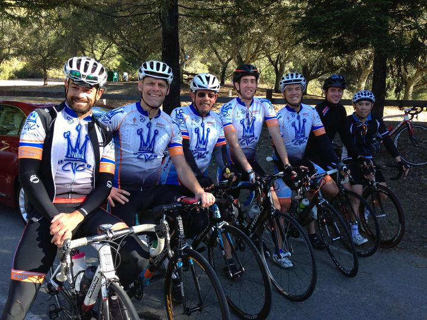

Low-Key Hillclimbs Aggregate Results:
Lomas Cantadas
generated Fri Nov 4 10:34:14 PDT 2016
|
|  |
| 2013 week 7: Team CVC (minus Bill Laddish) after Lomas Cantadas (Dan Connelly) |
Results are listed here from the Low-Key archives, sorted by time for each climb. Some years start and/or finish time differ slightly, such as
with Kings Mt Road where after 1995 the start moved from Entrance Way to Greer.
Results are ranked by time first, score second.
Score is calculated using a simple percent-of-median-speed
formula, with time adjustments for division. These scores will generally differ from those calculated in the results for that particular year, since
the scoring scheme has evolved. Tandems are split between 1998, when they were counted as single participants, and other years, when the individual
riders have been counted separately
Results for Men
| rank | time | score | rider | cat | team | year | week | code |
|---|
| 1 | 15:16 | 138.755 | Tim Clark | 35+ | Red Octane | 2008 | 8 | |
| 2 | 15:28 | 136.961 | Clark Foy | 40+ | San Jose Bike Club | 2008 | 8 | |
| 3 | 15:28 | 121.336 | Stefano Profumo | 35+ | Bike Trip/Symantec | 2013 | 7 | |
| 4 | 15:34 | 120.557 | David Collet | 40+ | Pen Velo/Pomodoro | 2013 | 7 | |
| 5 | 15:36 | 120.299 | Hanns Detlefsen | 40+ | Sr's & Mr's of No Mercy | 2013 | 7 | |
| 6 | 15:43 | 119.406 | Bill Laddish | 40+ | Team CVC | 2013 | 7 | |
| 7 | 15:54 | 118.029 | Carl Nielson | 50+ | Sr's & Mr's of No Mercy | 2013 | 7 | |
| 8 | 16:01 | 117.170 | Todd Markelz | 35+ | Google | 2013 | 7 | |
| 9 | 16:16 | 130.225 | Carl A. Nielson | 45+ | Wells Fargo Racing Team | 2008 | 8 | |
| 10 | 16:20 | 129.694 | Daniel Connelly | 3 | Low-Key | 2008 | 8 | |
| 11 | 16:58 | 110.609 | Steve Fielding | 45+ | | 2013 | 7 | |
| 12 | 17:05 | 109.854 | Tom Stanis | 35+ | Google | 2013 | 7 | |
| 13 | 17:12 | 123.159 | Floyd Long | Southern Expatriot | Oakland | 2008 | 8 | |
| 14 | 17:14 | 108.897 | Daniel Connelly | 45+ | Low-Key | 2013 | 7 | |
| 15 | 17:32 | 107.034 | Ken Cluff | 50+ | East Bay Velo Club (EBVC) | 2013 | 7 | |
| 16 | 17:33 | 106.933 | Rich Hill | 45+ | LGBRC | 2013 | 7 | |
| 17 | 17:35 | 120.474 | Tom Gardin | 35+ | | 2008 | 8 | |
| 18 | 17:35 | 106.730 | Yoni Doron-Peters | 25+ | Team Every Man Jack | 2013 | 7 | |
| 19 | 17:41 | 106.126 | Shahram Moatazedi | 40+ | LGBRC | 2013 | 7 | |
| 20 | 17:44 | 119.455 | Roland Freund | 45+ | Davis Bike Club | 2008 | 8 | |
| 21 | 17:44 | 105.827 | Graham Hymus | 40+ | Eden Bicycles | 2013 | 7 | |
| 22 | 17:46 | 105.629 | James Porter | Scotty I Need More Power | Western Wheelers | 2013 | 7 | |
| 23 | 17:50 | 105.234 | Brandon Smith | 25+ | Team CVC | 2013 | 7 | |
| 24 | 17:53 | 104.939 | Michael Busha | 30+ | Diablo | 2013 | 7 | |
| 25 | 18:03 | 103.970 | Matt McHugh | 45+ | GPC - Over the Hill Gang | 2013 | 7 | |
| 26 | 18:07 | 103.588 | Rob Nast | 50+ | | 2013 | 7 | |
| 27 | 18:16 | 102.737 | Mark King | 45+ | Equipe Flamme Rouge | 2013 | 7 | |
| 28 | 18:17 | 102.644 | Miro Miklos | 30+ | | 2013 | 7 | |
| 29 | 18:20 | 102.364 | Lucas Pereira | 40+ | Google | 2013 | 7 | |
| 29 | 18:20 | 102.364 | Joe Karbowski | 35+ | | 2013 | 7 | |
| 31 | 18:22 | 102.178 | Lindsey Furtado | 30+ | Team CVC | 2013 | 7 | |
| 32 | 18:23 | 115.231 | Chris Heisterkamp | Male | Google | 2008 | 8 | |
| 33 | 18:29 | 101.533 | Dino Brown | 50+ | The Brown Zone | 2013 | 7 | |
| 34 | 18:32 | 101.259 | Ryan Powell | | Team Joe Karbowski | 2013 | 7 | |
| 35 | 18:39 | 100.626 | J* Diesel | 35+ | Eden Bicycles | 2013 | 7 | |
| 36 | 18:41 | 100.446 | Eddie Santos | 25+ | Bike Trip/Symantec | 2013 | 7 | |
| 37 | 18:42 | 100.357 | Klaus Fleischmann | 45+ | | 2013 | 7 | |
| 38 | 18:46 | 100.000 | Bruce Gardner | 40+ | Sr's & Mr's of No Mercy | 2013 | 7 | |
| 39 | 18:48 | 99.823 | Bill Harkola | 55+ | Pen Velo/Pomodoro | 2013 | 7 | |
| 40 | 18:53 | 112.180 | Andreas Freund | Junior | Davis Bike Club | 2008 | 8 | |
| 41 | 18:53 | 99.382 | Travis Hockersmith | 34 Year Old Male Cat 4 | Cushman & Wakefield Racing | 2013 | 7 | |
| 42 | 18:57 | 111.785 | Bruce Gardner | 35+ | Monta Vista Velo | 2008 | 8 | |
| 43 | 19:00 | 98.772 | Tom Trauger | 50+ | Team EMJ | 2013 | 7 | |
| 44 | 19:05 | 111.004 | Russ McCrary | 45+ | Sr's & Mr's of No Mercy | 2008 | 8 | |
| 45 | 19:05 | 98.341 | Martin Hyland | 55+ | Diablo | 2013 | 7 | |
| 46 | 19:06 | 98.255 | Kevin Lee | 55+ | | 2013 | 7 | |
| 47 | 19:13 | 97.658 | Terrance Kloeckl | 50+ | Last Chosen | 2013 | 7 | |
| 48 | 19:20 | 109.569 | Tom Brown | Bad Veggie | Google | 2008 | 8 | |
| 49 | 19:23 | 109.286 | Calvin Do | 35+ | Skinny slow guys | 2008 | 8 | |
| 50 | 19:32 | 96.075 | Russ McCrary | 55+ | Sr's & Mr's of No Mercy | 2013 | 7 | |
| 51 | 19:43 | 95.182 | Don Langley | 50+ | Morgan Stanley | 2013 | 7 | |
| 52 | 19:45 | 107.257 | Ode Bernstein | Positive | Term of Enchantment | 2008 | 8 | |
| 53 | 19:49 | 94.701 | William Yee | 35+ | Team CVC | 2013 | 7 | |
| 54 | 19:53 | 94.384 | Peter Ingram | 55+ | Steely Man | 2013 | 7 | |
| 55 | 19:55 | 94.226 | Bart Niechwiej | 35+ | Google | 2013 | 7 | |
| 56 | 19:56 | 106.271 | Michael Williams | 35+ | Sr's & Mr's of No Mercy | 2008 | 8 | |
| 57 | 19:58 | 93.990 | John Koslosky | 45+ | Team CVC | 2013 | 7 | |
| 58 | 20:07 | 93.289 | David Malachowski | 35+ | Eden Bicycles | 2013 | 7 | |
| 59 | 20:09 | 93.135 | Ramon Periquet | 50+ | Team CVC | 2013 | 7 | |
| 60 | 20:10 | 93.058 | FranksMasterson | 60+ | Pen Velo/Pomodoro | 2013 | 7 | |
| 61 | 20:17 | 92.523 | Jameison Martin | | | 2013 | 7 | |
| 62 | 20:19 | 92.371 | Giles Douglas | 40 TODAY | Google | 2013 | 7 | |
| 63 | 20:21 | 92.219 | Scott Byer | 45+ | Google | 2013 | 7 | |
| 64 | 20:38 | 102.666 | Robert Palassou | | Sr's & Mr's of No Mercy | 2008 | 8 | |
| 65 | 20:41 | 90.733 | Mihai R. | 30+ | Google | 2013 | 7 | |
| 66 | 20:52 | 89.936 | Brandon Iles | 30+ | Google | 2013 | 7 | |
| 67 | 20:58 | 89.507 | Nic Brummell | 50+ | Atlas | 2013 | 7 | |
| 68 | 21:11 | 100.000 | Arley Lewis | | Field of Rabbits | 2008 | 8 | |
| 69 | 21:12 | 99.921 | Frank Vegh | 2πR | Alto Velo | 2008 | 8 | |
| 70 | 21:15 | 88.314 | Jeff Shute | 35+ | Google | 2013 | 7 | |
| 71 | 21:19 | 99.375 | Patrick Kenny | | Google | 2008 | 8 | |
| 72 | 21:40 | 97.769 | Alexander Freund | Junior | Davis Bike Club | 2008 | 8 | |
| 73 | 22:05 | 95.925 | Neal Herman | | Spike the Wonder Dog | 2008 | 8 | |
| 74 | 22:34 | 93.870 | Steve Youtskey | 45+ | Dolce Vita | 2008 | 8 | |
| 75 | 22:37 | 93.662 | Ryan P.C. Gibson | | Google | 2008 | 8 | |
| 76 | 22:39 | 93.525 | Stephen Fong | 5 | Blubber Busters | 2008 | 8 | |
| 77 | 22:54 | 92.504 | Greg McQuaid | 35+ | San Jose Bike Club | 2008 | 8 | |
| 78 | 23:00 | 92.101 | James Deitrich | Merlot | TJ | 2008 | 8 | |
| 78 | 23:00 | 92.101 | Jan Novak | 4 | TJ | 2008 | 8 | |
| 80 | 23:08 | 91.571 | Barry Burr | 45+ | One Leg to Stand On | 2008 | 8 | |
| 81 | 23:32 | 90.014 | Phil Dubach | 35+ | Western Wheelers | 2008 | 8 | |
| 82 | 23:33 | 79.689 | Bernard Demai | 65+ | | 2013 | 7 | |
| 83 | 23:43 | 89.318 | Jeff Swan | | Spike the Wonder Dog | 2008 | 8 | |
| 84 | 24:01 | 78.140 | Kevin Salyer | 55+ | SF Randonneurs | 2013 | 7 | |
| 85 | 24:26 | 76.808 | Pierre Doussiere | 50+ | My LowRacer & Myself | 2013 | 7 | |
| 86 | 24:42 | 75.978 | Craig Peters | 45+ | LGBRC | 2013 | 7 | |
| 87 | 24:47 | 75.723 | Stephen Fong | 0 | CyclePath Racing | 2013 | 7 | |
| 88 | 24:50 | 75.570 | Frank Paysen | 50+ | autonomous masochist | 2013 | 7 | |
| 89 | 24:55 | 75.318 | Mark Powers | 55+ | Pen Velo/Pomodoro | 2013 | 7 | |
| 90 | 25:07 | 74.718 | Gregory P Smith | 35+ | Zombie Raccoon | 2013 | 7 | |
| 91 | 25:21 | 83.563 | Yuri Zhovnirovsky | -1 | Field of Rabbits | 2008 | 8 | |
| 92 | 25:32 | 82.963 | Bob Corman | | Spike the Wonder Dog | 2008 | 8 | |
| 92 | 25:32 | 82.963 | Patrick Callahan | 35+ | Western Wheelers | 2008 | 8 | |
| 94 | 25:40 | 73.117 | Richard Hughes | 65+ | Team CVC | 2013 | 7 | |
| 95 | 26:06 | 81.162 | Michael Ahern | 40+ | LGBRC | 2008 | 8 | |
| 96 | 27:26 | 68.408 | Ben Blizard | 35+ | Blizardo Racing Co-Op | 2013 | 7 | |
| 97 | 28:06 | 75.386 | Wolfgang Timm | 40+ | Western Wheelers | 2008 | 8 | |
Results for Hybrid Electric
| rank | time | score | rider | cat | team | year | week | code |
|---|
| 1 | 10:18 | 105.869 | Bill Bushnell | Hors | Low-Key | 2013 | 7 | |
| 2 | 12:13 | 100.754 | Bill Bushnell | Hybrid | Low-Key | 2008 | 8 | |
Results for Women
| rank | time | score | rider | cat | team | year | week | code |
|---|
| 1 | 20:01 | 127.658 | Jennie Phillips | 45+ | Sr's & Mr's of No Mercy | 2008 | 8 | |
| 2 | 20:08 | 112.439 | Lisa Penzel | 45+ | The Brown Zone | 2013 | 7 | |
| 3 | 20:29 | 110.518 | Jennie Phillips | 50+ | Sr's & Mr's of No Mercy | 2013 | 7 | |
| 4 | 21:06 | 107.288 | Janet Martinez/Gardner | 45+ | Sr's & Mr's of No Mercy | 2013 | 7 | |
| 5 | 21:07 | 121.008 | Janet Martinez/Gardner | 40+ | Sr's & Mr's of No Mercy | 2008 | 8 | |
| 6 | 21:19 | 106.197 | Sugar Brown | Fat Camp | The Brown Zone | 2013 | 7 | |
| 7 | 21:25 | 105.701 | Honey (Badger) Brown | 35+ | The Brown Zone | 2013 | 7 | |
| 8 | 21:28 | 105.455 | Trish Pacheco | 45+ | Sr's & Mr's of No Mercy | 2013 | 7 | |
| 9 | 21:31 | 118.759 | Holly Harris | 45+ | Sr's & Mr's of No Mercy | 2008 | 8 | |
| 10 | 22:16 | 101.666 | Marty Scott | 55+ | LGBRC | 2013 | 7 | |
| 11 | 22:57 | 111.342 | Laura Jump | | Spike the Wonder Dog | 2008 | 8 | |
| 12 | 23:02 | 98.282 | Eva Silverstein | 40+ | Western Wheelers | 2013 | 7 | |
| 13 | 24:14 | 93.416 | Jennifer Kalich | 35+ | LGBRC | 2013 | 7 | |
| 14 | 26:05 | 97.966 | Alison Chaiken | 40+ | Sr's & Mr's of No Mercy | 2008 | 8 | |
| 15 | 26:26 | 85.641 | Otis Gilchrist | 20+ | Atlas | 2013 | 7 | |
| 16 | 26:45 | 95.525 | Stephanie Jenson | Good Veggie | You See Med | 2008 | 8 | |
| 17 | 29:04 | 87.911 | Marie-Claire Vacher | | Western Wheelers | 2008 | 8 | |
Results for Tandem
| rank | time | score | rider | cat | team | year | week | code |
|---|
| 1 | 19:28 | 96.404 | Paul McKenzie | 55+ | Sr's & Mr's of No Mercy | 2013 | 7 | |
| 1 | 19:28 | 96.404 | Paul Chuck | 55+ | Sr's & Mr's of No Mercy | 2013 | 7 | |